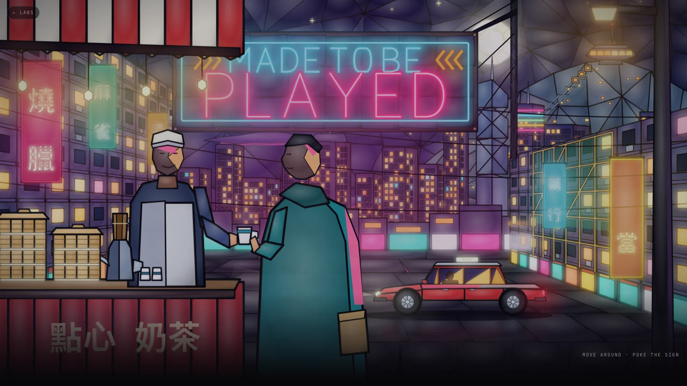
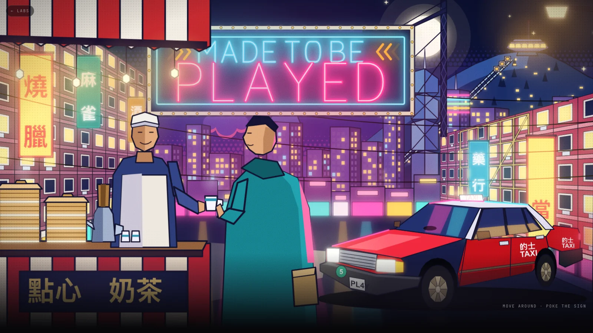
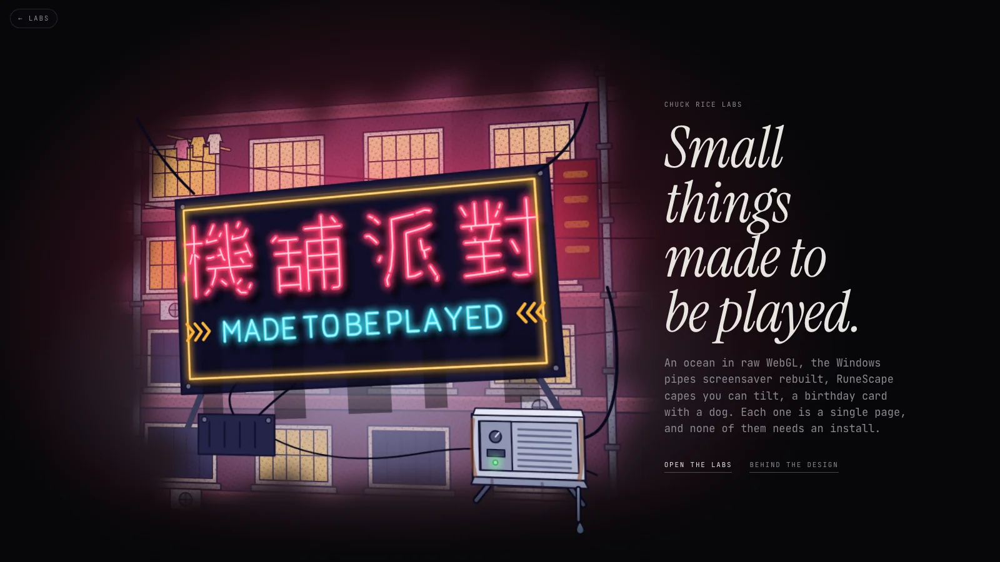

I wanted a hero that says "made to be played". It took three goes, and the first two are in the bin. This is why, and what's left.
By Chuck Rice ·
Hong Kong at night, in layers. Dim sum and hot milk tea being sold on the street up front, a red taxi and a big neon sign in the middle, skyscrapers and the Peak with its tram climbing behind. Stained glass, but not realistic: like layered glass paintings or sculptures, a bit comic book without going full Borderlands. Moody, with the neon doing the shouting.
Rule: say the whole scene out loud before drawing any of it.
The first build was sheets of leaded glass with a gap between each, so moving the mouse slid them against each other. Every pane had a lead line and a glow behind it. The neon worked, the street felt right, and the people looked like gems with faces.

First go. I said it did great, all things considered, and asked for a different style.
Rule: "great, all things considered" means start again.
I sent three references: flat, graphic Hong Kong illustrations, a red-and-white taxi in three-quarter view, banded pink tenements, a retro poster. The second go took that: flat colour, thin outlines, halftone, a proper taxi. It was better, and it was still every part drawn by typing in coordinates.

Second go. Closer to the references, and about as far as hand-typed shapes go.
Rule: know what your tools can't draw before you ask them to.
I asked how it was made. The honest answer was a few thousand polygons, placed by hand. A scene like the references needs real illustrated layers, and generating those is its own project. So I went the other way: just the sign. Slightly askew instead of flat, on the side of a building that fades out in an irregular shape, with the glow escaping the cutout. Text beside it, on the left in the end. It is now the hero on the labs page.
Rule: when the scene can't carry the idea, cut to the one part that already does.
Hand-drawing Chinese neon would look wrong to anyone who can read it. So each character is rendered in a bold sans, thinned down to a centreline, and only that path is kept: a tube, not a letter shape. 機舖 is Cantonese for arcade, so the sign says 機舖派對, arcade party, with MADE TO BE PLAYED in English underneath. Add ?cn=arcade to the labs page to see just 機舖.

Where it landed.
Rule: if you can't draw it, trace it.
I asked for an air conditioner somewhere in the picture, because it would make it feel mega authentic. My first one had its controls facing the street, which is wrong: you only ever see the back of it from outside. It's the outdoor side of a window unit bolted to the wall: a fan guard, louvres, rust, and an occasional drip that rolls off the pipe and falls.
Rule: the authentic detail is the boring one.